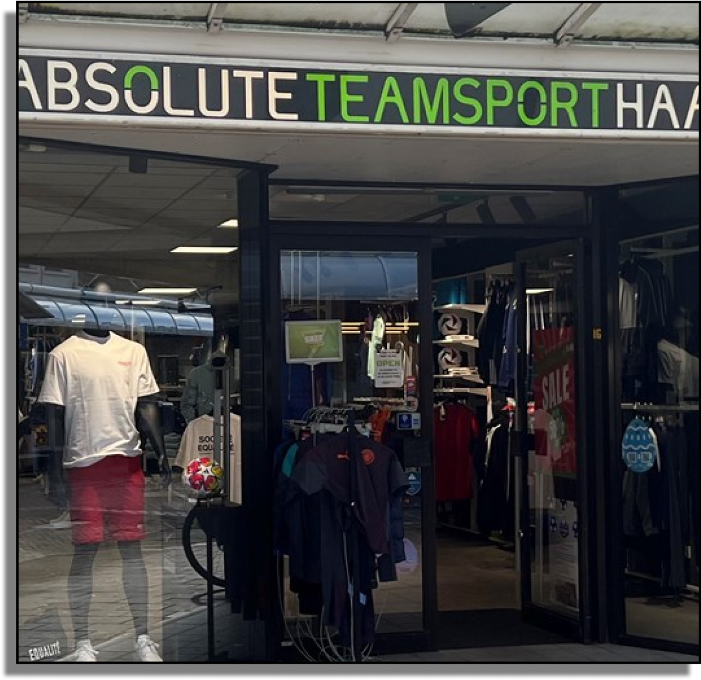

1. Shop Locally
Buying football equipment from local stores ensures you get the best quality and support local businesses. Local stores often have knowledgeable staff who can help you find the right gear.

2. Buy in Small Quantities
When starting out, it's best to buy equipment in small quantities to see what works best for you. This helps avoid unnecessary expenses and ensures you get the gear that suits your needs.